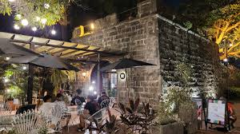
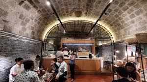
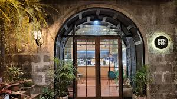
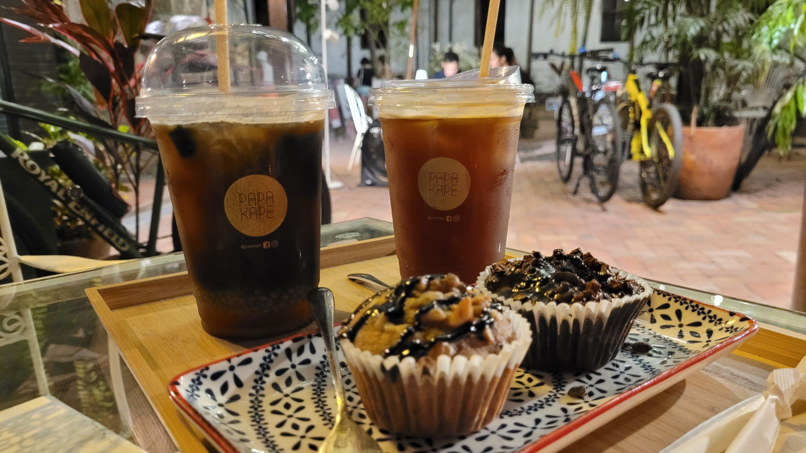
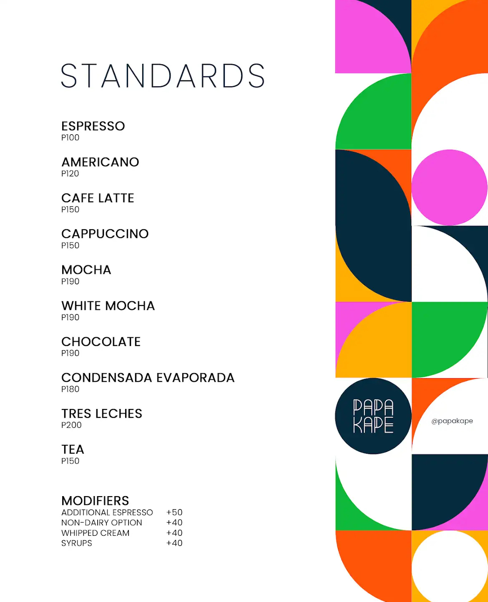

Overview
Papa Kape is a local café tucked away in the alleys of Intramuros, known for serving freshly brewed barako coffee, Filipino pastries, and charming vibes. With vintage wood interiors and old Manila charm, it’s a favorite hangout for students, tourists, and creatives seeking caffeine and culture in one cup.
Photo Gallery








Key Features
- Authentic kapeng barako and traditional brews
- Cozy seating with native decor
- Affordable merienda and snacks
- Study- and work-friendly atmosphere
- Friendly staff and local ambiance
Find It Here
User Reviews
Loading average rating...